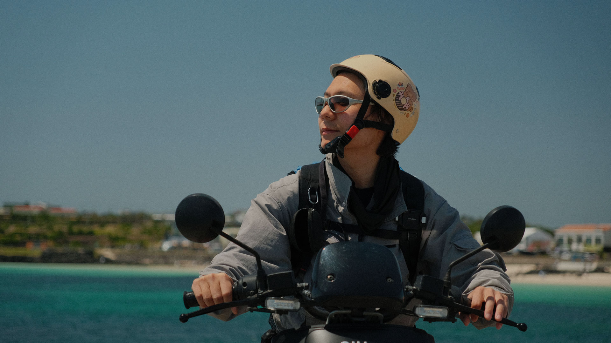
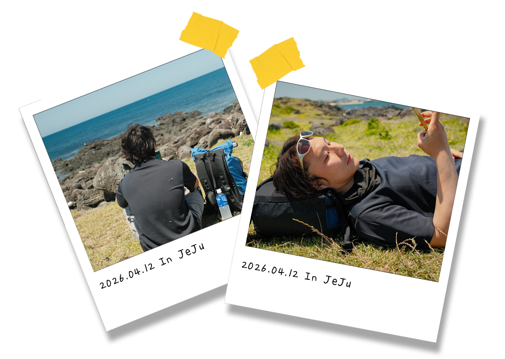
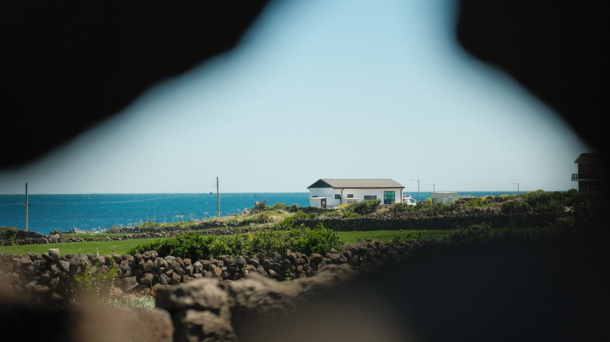
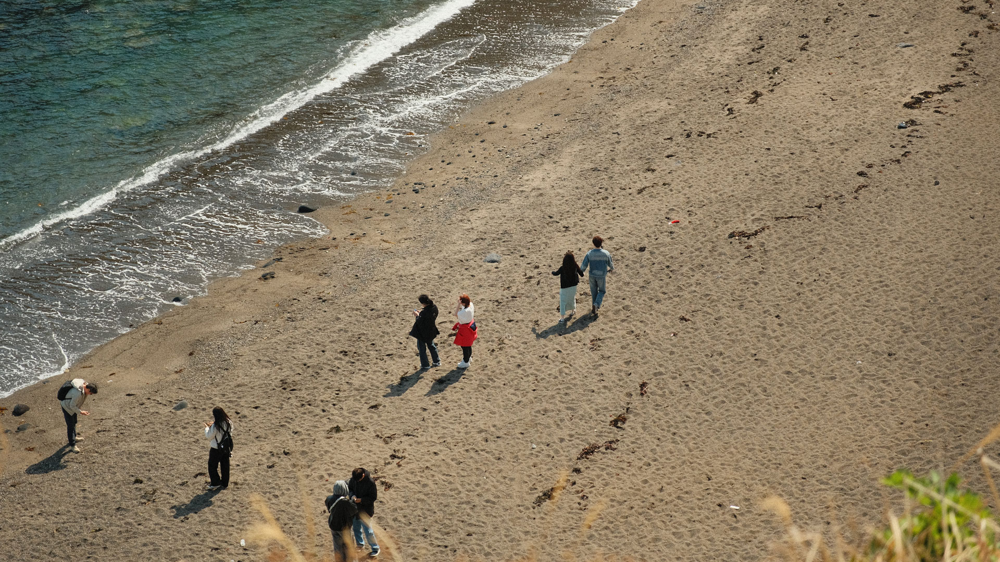
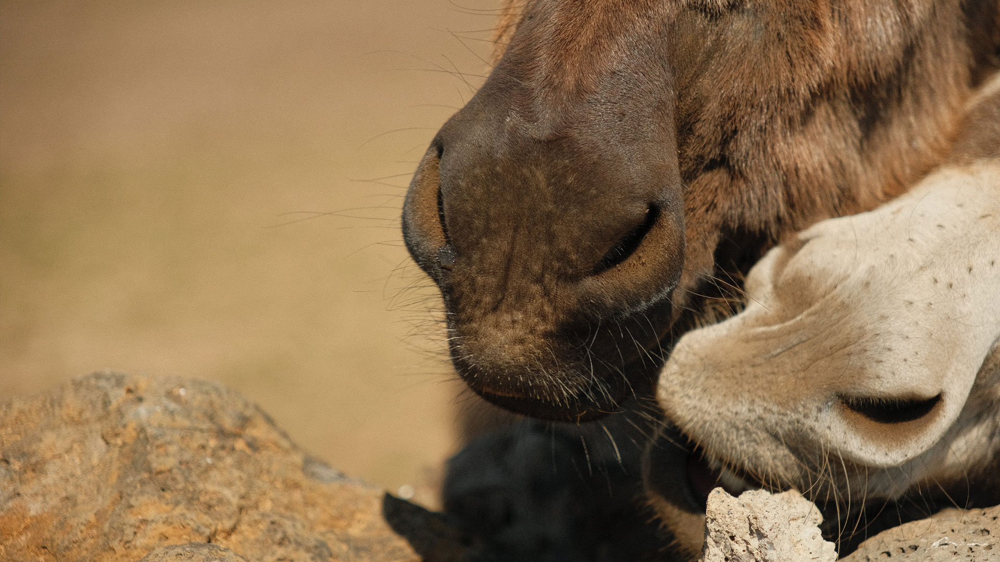
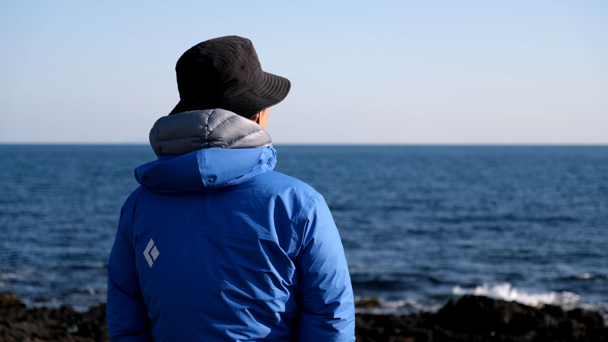

Memories of Joy in Jeju

While I tried to travel on foot as much as possible, I occasionally hopped on a motorcycle to cover more ground.
It was actually my first time riding one — but honestly, it was way easier than I expected, and twice as fun.
If you're planning a trip to Jeju, take it as a challenge and rent a motorcycle. You won't regret it. 🏍️
An Island Within an Island Udo



Udo is nothing short of magical.
As someone who has spent most of my life in the city, stepping onto Udo felt like entering a completely different world. The crystal-clear turquoise waters, the endless fields of green, and the slow, unhurried pace of life — everything about this place felt beautifully foreign to me. There are no traffic lights, no towering buildings, no rush. Just the sound of the wind, the smell of the sea, and the kind of stillness you rarely find in the city. If you ever find yourself on Jeju Island, do yourself a favor — take the short ferry ride to Udo. It might just be the most memorable part of your trip.
Udo is home to several stunning beaches, each with its own unique charm.
The eastern side of Jeju is renowned for its breathtaking emerald waters, and Udo — sitting at the very eastern tip of the island — takes that beauty to another level entirely. From almost every corner of Udo, you're greeted with unobstructed panoramic views of the ocean. The kind of view that makes you stop walking, put your phone down, and just breathe it all in. It's not just a beach. It's a reminder of how spectacular the natural world can be.
They say Jeju Island is famous for its horses and nowhere is that more true than in Udo.
Wander through the quiet village roads and you might find yourself sharing the path with a horse, casually roaming through the countryside as if it owns the place. It's one of those unexpected little moments that makes Udo so special. No fences, no schedules — just horses living freely among the fields and the sea breeze. For a city person like me, it was honestly one of the most charming things I've ever seen. 🐴
I'll be back. No doubt. Udo never lets you go.
